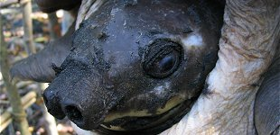

La tortue à nez de cochon est aussi appelée carettochélyde d'Australasie ou encore tortue de la rivière Fly. C'est une tortue d'eau douce géante, seule espèce survivante d'une famille des carettochélydae.
|  |
|
Où vit-il ? Elle est présente dans les marécages et les rivières de Chine, en Papouasie-Nouvelle Guinée et dans le Nord de l'Australie, et en Indonésie.
Combien en reste-il aujourd'hui ? On dénombre 1,5 millions à 2 millions d'œufs ramassés chaque année, qui fournissent des nouveau-nés au commerce international. Les tortues adultes sont prélevées pour la consommation locale aborigène.
Domestiquée dès son plus jeune âge : Elle est, au même titre que ses cousines, très prisée comme animal de compagnie. Dans les rues de Hong Kong, Malaisie, Thaïlande, et Singapour, de jeunes nouveau-nés sont vendus pour environ 5€.
A savoir : Son nom provient de son museau proéminent épais, qui lui permet de chercher les petits crustacés. Cette tortue inhabituelle a beaucoup de mal à se reproduire en captivité. Il faut noter qu'aujourd'hui, 2/3 des tortues sont menacées ou en voie de disparition.